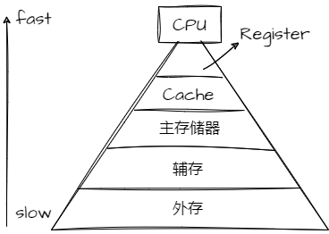

关于Cache
本文最后更新于：2023年10月29日 晚上
- 后续有时间的情况下，可以阅读《计算机组成与设计-硬件软件接口》第五章的内容，对写的博客进行补充。
1. 为什么需要Cache
- 运行一个进程的步骤（假设为一个变量a加1）
- 首先从磁盘（辅存）中读出可执行程序，并将其load到主存储器中。
- CPU从主存储器中读出地址为A的数据发到CPU的通用寄存器中。
- 将通用寄存器的值加1.
- CPU再将通用寄存器的值写给主存储器。
- 上面的步骤中，第三步的速度很快，但是第二步和第四步，与主存的交互很慢。为了解决这个问题，使用一块速度极快但是容量小的存储设备：cache meomory。

- 将Cache放在CPU和主存之间，作为主存数据的缓存，当CPU想从主存中取数据会首先检查Cache中是否有对应地址的数据，如果有的话就可以直接取出给CPU使用。
2. 多级Cache存储结构
- Cache不可避免的需要在容量和速度之间进行平衡，但是即使多级Cache的速度仍比主存要快的多.
- 以Cortex-A53为例，三级Cache分布如下
- 每个CPU都有一个L1 Cache，L1
Cache会分为单独的ICache（指令）和DCache（数据）。
- ICache和DCache本质是一样的，L1 Cache单独分开的原因：
- CPU执行时，可以同时从两个Cache中获取指令和数据，做到硬件上的并行，提升性能。
- DCache不仅需要考虑读出还要考虑写入的问题；而ICache只会被读取。分开两个电路设计，为了更快！
- L1 Cache是最接近处理器的，要求其与CPU有近似的速度，也就注定了其容量不能太大，一般使用SRAM实现。
- L1 Cache中，ICache和DCache的大小一般32-64KB，2-4个时钟周期访问时间。
- ICache和DCache本质是一样的，L1 Cache单独分开的原因：
- 一个Cluster内所有的CPU都共享一个L2 Cache。
- L2 Cache是指令和数据共享，速度可以比CPU慢一些，主要功能是尽量保存更多的内容。
- 一般也是SRAM实现，大小为256KB-2MB，10-20个时钟周期的访问时间。
- 虽然与L1一样都是SRAM实现，但是L1的SRAM设计是为了速度进行优化，采用更复杂更大更多的晶体管，因此成本和功耗都增加了不少。
- 所有的Cluster之间共享L3 Cache。而L3 Cache通过总线与主存相连。
- 在一些系统设计中，L3 cache及更高级采用的是DRAM设计，成本更低。
- L3 Cache一般大小为8-80MB，20-50个时钟周期的访问时间。
- 每个CPU都有一个L1 Cache，L1
Cache会分为单独的ICache（指令）和DCache（数据）。
- 注意：上面描述的多个cluster就有多个二级缓存，那么就牵扯到缓存一致性的问题，后面会介绍。
3. 多级Cache之间的配合
- inclusive cache（一个地址的数据可以存在多级缓存中）
- CPU想获取主存某地址的数据时，首先先访问L1 Cache，看是否命中，如果命中直接返回数据给GPU。
- 如果L1 Cache缺失，则会在L2 Cache中继续寻找，如果找到，那么会把数据返回给L1和CPU.(返回给L1是为了下次可以在L1的时候就命中)。
- 同理，L2找不到去找L3，找到返回L1,L2，CPU。
- 如果 L3也缺失，CPU只能去主存储器中找数据，找到返回给L1,L2,L3,CPU。
- exclusive cache：某一地址的数据只能存在于多级Cache中的一级。
4. Cache对代码的影响
- 首先看两端代码片段
1
2
3
4
5int arr[10][128];
for (i = 0; i < 10; i++)
for (j = 0; j < 128; j++)
arr[i][j] = 1;1
2
3
4
5int arr[10][128];
for (i = 0; i < 128; i++)
for (j = 0; j < 10; j++)
arr[j][i] = 1; - 假设cache line的大小是64字节
- 首先分析第一段代码
- cache控制器发现arr[0][0]缺失，便从主存中取出arr[0][0]到arr[0][15]（int数据类型占4个字节）。对于arr[0][1]-[15]来说就命中了。
- 之后到arr[0][16]时，又缺失，便又会在主存那里load出16个数据，64个字节。
- 这种情况得命中率还是较高的。
- 分析第二段代码
- cache控制器发现arr[0][0]缺失，便从主存中取出arr[0][0]到arr[0][15]，之后读第二个数据arr[1][0]，结果发现又缺失了，依次类推。
- 当访问到arr[0][1]时，需要考虑cache的大小，如果大于数组arr的大小，那么经过前面的一系列缓存，arr[0][0]- arr[9][15]都被缓存下来，与第一段代码差不多的命中率。
- 但是如果cache的大小小于数组的大小，那么第二段代码的命中率就没有第一段高，自然要消耗更多的时间从主存中load数据。
关于Cache
http://binbinqian.cn/2023/10/29/关于Cache/